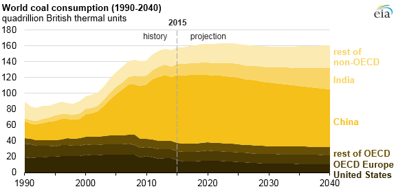

Nature – A beautiful creation of God – provides us with our endless
necessities and the air we breathe, is also a magnificent and
soothing trip for our eyes. While standing in the middle of a
forest, one can feel the fresh breeze flowing past, the sounds of
birds chirping, the area of trees, fine bamboo, pines, etc. Such as
the Dehing Patkai Wildlife Sanctuary situated in North-Eastern
India, covering an area of 111.19 km2 rainforest.
Sadly, it’s getting destroyed by greedy organizations while we
speak. It has been a classic example of ‘Overexploitation of the
natural Resources’ which has led to a point of inevitable
destruction.
“Over-exploitation of Resources is a point of over-using those
resources to the point that it can’t be replenished.”

How is the problem Relevant for the society?
Dehing Patkai is considered as Amazon of the East. It houses
Elephants (under the threat of being endangered), Asian leaf turtle
and King Cobras.
‘But Human greed has led to a point of their extinction.’
- A species is about to be wiped out.
- Miners come for coal extraction, illegal coal mining is carried out. This has led to a point of degradation of the surrounding lands.
- Heavy deforestation is done for Jhum cultivation and tree plantations leading to destruction of forest habitats.
- Miners use huge trucks and vehicles for transporting of coal leading to destruction and pollution.
- Due to illegal mining taking place, the coal discharges were directly thrown into nearly fields which passes through village.
There are countless more problems for the society and we could merely name obvious few from countless others.
The question arises: How is coal being mined up to this day, even if natural awareness has been raised?
The villagers consider coal as the opium of the masses. Thus many
homes have coal depots set up in their own compound.
"Villagers also hire migrant labourers and provide as the first
chain suppliers."
The core of the problem needless to say there are opposers of the
situation, but evil subdues the good.
So, what are the existing solutions to the problems?
- The government has terminated existing leashes of the companies.
- Dehing Patkai is about to be declared a National Park.
- Yes, none of those decisions were made without existing pressure from various sections of people, meaning there is negligence by the higher power.
- Also illegal mining is still done regardless of the activities of people and government.
A point of importance is the involvement of ‘International
Indigenous People’s Movement for Self Determination and Liberation
(IPMSDL) headquartered in Philippine who have joined to voice their
concerns and denouncing India’s Environment Agencies’ project for
coal mining approval.
‘A Possible Ally.”

So After Much Criticism, What Are Our Proposed Solution?
- Our proposed solution is based on our ability to improve the security of the area and working towards possible Sustainable Development.
- For a start, we must appoint a blend of people made up of state appointed guards and local unemployed people who would want to earn some money protecting the forest. They may use drones, etc.
- As the local reserves are located in a particular are, we can test the area for possible vegetation of cacti and other tundra vegetation. This will serve two purposes.
- To keep the miners away possibly from the reserves.
- Tundra vegetation is proficient in growing in areas with less water and brings a natural balance through transpiration. Since the grounds are dried because of the illegal mining, ground levels are broken, tundra vegetation would replenish the grounds.
- Databases are to be compiled based on the villagers. If they are part of the mining activities, they would have lots of unaccounted money. If they are questioned upon them, we would be able to access the inner cycle of the illegal mining trades.
- We would create websites that will be used to find areas with those reserves. And it will be available to a country wide basis.
- If the resources from an area were to be used wisely and up to a limit, the problem of degradation will not arise. As such the database will be provided to environmental activities and coal mining in an area will be estimated to meet this mark, exceeding which the companies further grinding for resources will be prosecuted.
- Database and webpages that will track down the usage of coal by companies. If they have exceeded a certain limit, e.g. 100 tons of a resources, they will be prosecuted.
- Introduction of more animals in the reserve. As the circle of life continues, carnivores will eat the herbivores for food, and their remains will be buried under and be a source of fossil fuels for the future. Black Panthers, Leopards, etc. as a security measure, as well as an indicator for natural occurrences.
The Question Arises, Why are Our Proposed Solutions Efficient?
Because we plan to save the Habitats and protect its inhabitants to
maintain a balance of ecology. Also, if we could limit the use of
resources, we are saving the resources and controlling pollution
levels.
The proposed solution has a positive impact on Nature, as our aim is
to protect the Environment.
Are Our Solutions Unique and New?
We don’t claim for it to be new as a World of 7 Billion people might
have had those ideas. But we can claim that our objectives if
implemented will be affective as we are trying to indicate the
problems on the base level.
Our Objectives are to protect the reserves and protection of
the habitats. Also we look forward to identifying the chief offender
of the society.
Our Goals are to obtain an Environment free of destruction
because of Human Greed. The milestone for the above will be a point
where Dehing Patkai reserves won’t have illegal activities.
Our Stepwise Planning and Execution Strategy
- Gram Panchayats are to be made aware about our plan to appoint people who are willing to work with the established guards for extra protection.
- Information, income sources, recorded wealth, etc. of people of surrounding villages are to be accounted on our database. Unaccounted money will be questioned upon and they will be accordingly prosecuted if they are not able to provide the income sources. As unaccounted money is a result of illegal activities.
- Websites, in accordance with activist groups are to be launched, only accessible to special individuals like scientists who would estimate resource reserves. The data will be provided to the government who would have to estimate the use of a mere 4% (maximum) of resources for building purposes. Activist groups will be able to monitor these activities
- Database, which accounts usage of a particular reserve is compiled for various companies, a point of exceeding the limit will hold them answerable to the people. This will prevent pollution.
- Tundra vegetation growing in and around the reserves will protect the ground because tundra vegetation grows in places with less water. Ground levels will be protected from degradation.
The impact of our solution, if positive will reduce pollution levels, animal deaths and most importantly save the resources.
Roadmap
July, 2026
- - Villagers are appointed to aid the guards.
- - Plantation of tundra vegetation along with the reserves.
- - Databases that are made to collect data on activities of the companies are made.
August, 2026
- - Databases with villagers’ incomes are compiled, and their wealth accounted for illegal activities to be found out.
- - Appointing the guards on checkpoints built around the area.
- - New species of animals are introduced. Carnivores and large mammals.
September, 2026
- - Database of activities by companies are accounted for.
- - Observation of animal activities over the last month.
- - Companies violating the limit of usage are prosecuted.
October, 2026
- - Reports of our activities, made public, along with over usage of resources by violating companies.
- - Villagers with unaccounted wealth, prosecuted.
- - Drone system and security to be changed from our existing ones.
November, 2026 to June, 2027
- - All illegal activities recorded and accounted for.
- - By the info provided by the villagers who have been prosecuted on accounts of undetermined wealth
- - Observing our existing guards and changing them based on evaluation.
The year from June, 2027 to June, 2028 is to be repeated with the
same process and our success rates determined and areas pf
improvement determined.
Based on our proposed solution we can estimate a two year period, at
the end of which our success is determined.
This period is from June, 2026 – June, 2028. And results will be
observed in that time frame. We can start from June, 2026 as we
would need the time till then to create database, as well as study
of pH of the areas.
What Will Our Next Step be? For the future.
As we know, a lot of people will be unemployed at the end of this
operation. So what are the methods we might use?
The extra materials found in the forest like fallen leaves,
branches, barks may be used to make new materials.
Places which are completely unusable may be subjected to Jhum
cultivation and people may work on these plantation.
As a conclusion, we might only be able hope that our initiative is a
success. And we can protect the resources. But unless people
understand the evils we are dealing with here, we won’t be able to
change. So, the basic changes must start with our immediate
awareness. We must raise these issues for the future generations to
come.
Nature is an art of God. How pathetic are we to ruin that art. Only
time will tell us, what us our prupose.